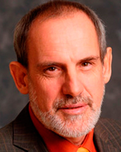
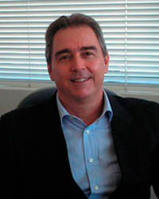
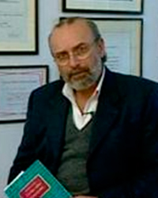

Dr. Ángel Oscar Minotti
Profesor titular de Medicina Homeopática y Director de Patogenesias de la Asociación Médica Homepática Argentina.
Autor de primer programa computarizado a nivel mundial, en idioma español, del Reparto de Kent, en 1988.
Autor de los libros "Los Tumores de Mamá", "Los Traumatismos, Heridas y Secuelas" y "Ensayos Filosóficos".
Autor del método audiovisual para el aprendizaje de la Materia Médica, llamado "Materia Médica Vivencial".
Imparte Cursos en forma contínua en Brasil, España, Uruguay y Colombia.
Dr. Gustavo Alberto Cataldi
Médico egresado de la Facultad de Medicina de la Universodad de Buenos Aires en el años de 1979 con diploma de honor.
Licenciado Filosofía egresa de la Facultad de Filosofía y Letras de la Universidad de Buenos Aires en el año 2008 con diploma de honor.
Especialista en Clínica Médica en el Hospital Churruca entre 1980 y 1983.
Fue médico de Planta en el servicio de Terapia Intensiva del mismo Hospital desde 1983 hasta el año 2000.
Realizó el Curso de Homeopatía en la Escuela Médica Homeopática Argentina "Tomás Pablo Paschero", finalizándolo en 1988.
En dicha Institución desarrolló toda su Carrera Docente hasta ser nombrado profesor Titular, cargo que desempeña desde 1999.
Fue relator en numerosos Congresos de Homeopatía, dictó cursos en países como Cuba, Brasil y Uruguay.
Autor de numerosos trabajos en Homeopatía publicados en revistas nacionales e internacionales.
Vicepresidente Nacional por Argentina ante la Liga Médica Homeopática Internacional desde 2009.
Director de la Escuela Médica Homeopática Argentina "Tomás Pablo Paschero" desde el año 2004 hasta la actualidad.

Dr. Gustavo Ezequiel Krichesky
Médico egresado de 1981 de la Universidad de Buenos Aires.
Egresado de la Escuela Médica Homepática Argentina bajo la dirección del Profesor Tomás Pablo Paschero en 1984.
Miembro de la Liga Mediocorum Homepathica Intenationalis desde 1984.
Profesor Adjunto de Materia Médica en 1991.
Profesor Titular de Materia Médica desde 1993.
Profesor Titular Plenario de Materia Médica por sociedades Médico Homepáticas de Sudamérica, México y Europa.
Autor de numerosos trabajos traducidos y publicados en numerosas revistas de Homeopatía en el extranjero.
Autor del Libro Homeopatía. Estudio comparativo de Medicamentos de la Materia Médica Homeopática, editado por KIER en 2005.
Autor del libro "Omeopatia Comparata".
Diagnosi differenziale tra alcuni rimedi della Materia Medica Omeopatia en italiano. Edizioni Salus.
Autor del libro Homepatía. Materia Médica Comparada, editado por KIER en 2008 -Prologado por el Dr. Zalman J. Bronfman.
Vicepresidente de la Escuela Médica Homepática Tomás Pablo Paschero (2003-2005).
Prof. Dr. Martin Dinges
Ingeniero Agrónomo egresado de la Escuela Superior de Agricultura Luis de Queiroz (ESALQ-USP) en 1981.
Médico egresado de la Facultad de Medicina de la Universidad de Sao Paulo (FMUSP) en 1991.
Lato Sensu Graduado en Homeopatía (1994) por la Asociación Paulista de Homeopatía (APH).
Título de Especialista en Homeopatía (1996) emitido por la Asociación Médica Homeopática Brasileña (AMHB).
Doctor en Ciencias Médicas (PhD, 2009), Facultad de Medicina de la Universidad de Sao Paulo (FMUSO).
Profesor y coordinador del curso "Fundamentos de la Homeopatía" desde 2003, Facultad de Medicina de la Universidad de Sao Paulo (FMUSP).
Dr. Marcus Zulian Teixeira
Director Delegado del Instituto para la Historia de la Medicina de la Fundación Robert Bosch, Stuttgart, Alemania y Profesor Adjunto de Historia Moderna en la Universidad de Mannheim, Stuttgart, Alemania.
Sus temas principales de investigación son los relacionados con la Historia Moderna de la Salud y la Historia de Género.
Estudió Leyes, Historia y Ciencias Políticas en las Universidades de Colonia, Maguncia, Bonn, Berlín y Bordeaux.
Doctor en Ciencias por la Universidad Libre de Berlín en 1986 con la Tesis "Stadtarmut in Bordeaux" (1525-1675), Alltag, Politil, Mentalitäten, Bonn 1988.
Maestría de Grado en Marburg, 1991 (acreditado como archivista de estado).
Habilitación por la Universidad de Mannheim, 1992 por su libro "Der Maurermeister und der Finanzrichter. Ehre, Geld und soziale Kontrolle im Paris des 18", Jahrhunderts, Göttingen 1994.
Nombramiento como Profesor Adjunto en la Universidad de Mannheim en 2000.
Nombramiento como Profesir Honorario del INstituto de Ciencias Médico Homeopáticas "Pandit Jawaharlal Nehru Memorial" de Amravati, India en 2006.
Publicaciones:
* "La transmisión de prácticas de Salud" (c. 1500 a 2000), Stuttgart 2011 (ed. con Robert Jütte)
* "La Salud y el Cuidado de la Salud entre las Organizaciones Intermediarias de Auto-ayuda y Ayuda asistencial a los necesitados" (1500-2005). Procedimientos de la conferencia de la Red Temática Europea de Políticas de Salud y Asistencia Social en Braga, Portugal, 2004, Evora 2007 (ed.)
* "Samuel Hahnemann und sein Umfeld. Quellen aus der Sammlung der Deutschen Homöopathie-Union", editado por H. Talkenberger (Stuttgart 2005) (ed. con R. Jütte)
* "Los pacientes en la Historia de la Homeopatía" (Sheffield, 2002)(ed.)
* "Weltgeschichte der Homöopathie", Länder - Schulen - Heilkindige (Munich, 1996)(ed.)
* "Homöoplathie. Patienten, Heilkundige und Institutionen". Von den Anfägen bis heute Heidelberg, 1996) (ed.)
* "Medizinkristische Bewegungen im Deutschen Reich" (ca. 1870 - ca. 1933) (Stuttgart, 1996) (ed.)
Prof. Dr. Marcelo candegabe
Discípulo directo del maestro Tomás Pablo Paschero.
Profesor Titular de las Cátedras de Doctrina Médica homeopática e Historia de la Homeopatía y ex director de la Escuela Médica Homeopática Argentina (EMHA) Tomas Pablo Paschero.
Fundador y Director de la "Universidad Candegabe de Homeopatía" Distance Learning University.
Creador del Método HUMA y el "Algoritmo Candegabe"
A impartido múltiples cursos y seminarios de Homeopatía en el mundo por más de 25 años.
Publicaciones
"Escritos sobre Homeopatía"
"Aproximación al Método práctico y preciso de la Homeopatía Pura"
"Diálogos con Tomás Pablo Paschero"
"Bases y fundamentos de la doctrina y clínica médica homeopáticas"
"Aproximación al Método de la Homeopatía Pura".
REGRESAR